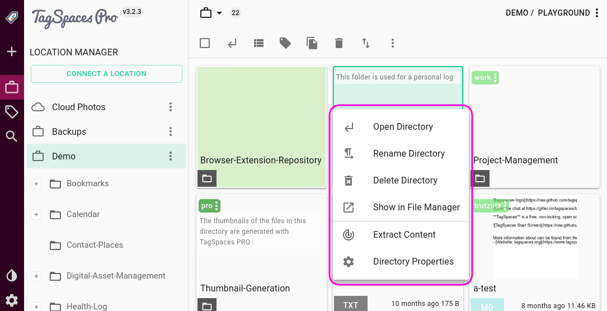
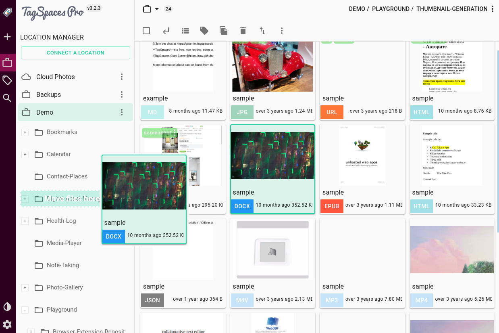
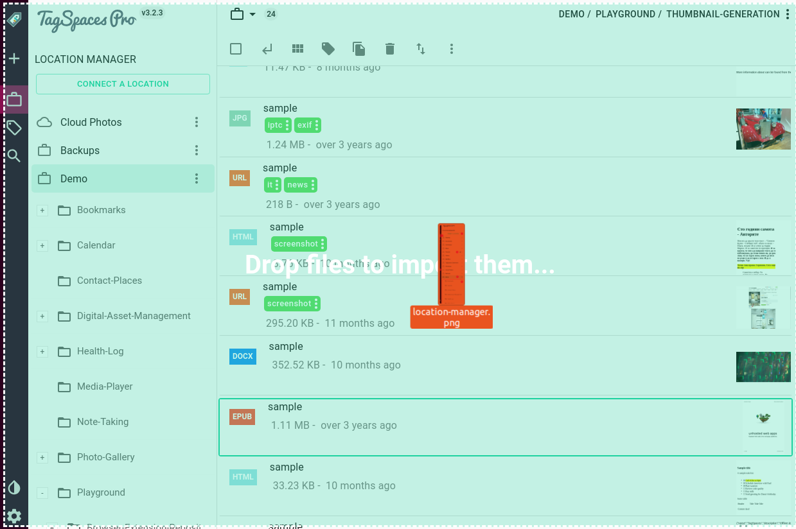

Browsing Files and Folders
Content
When you navigate to a folder in your active location, the files contained in the selected folder will be displayed on the main file browsing area of the user interface. TagSpaces offers flexible views to display your files. These views are called perspectives.
Perspectives overview
Perspectives are not an integral part of TagSpaces, but exist as modular extensions. This modular approach allows for more flexibility, easier development, and customizability of each separate perspective. TagSpaces is delivered by default with one perspective. Other perspective can be added on demand in the Enterprise version of the product. In this document we will describe the following perspectives:
Default Perspective - Presenting your files as list and in grid.
FolderViz Perspective (Discontinued) - This is an experimental perspective which applies some information visualization concepts to presenting your folder and file structures.
Default perspective
The most common way of presenting files in a folder is in a list and grid formats, both formats are supported in the default perspective.

Each row of the list consists of columns, which give specific information about the files. The column names can be found in the header row, at the top of the list.

The columns, from left to right are:
File extension - A color coded icon, representing the file type. Scroll down to Common features -> Color coded file extensions to learn more about this feature.
The checkbox underneath the file extension icon can be used to easily select one or more files.
Hint: This also means that
Ctrl or Shift + clickwill not work for selecting multiple files in the current version of TagSpaces, although this functionality is planned for a future release.
- Title - The file's title is the filename without the extension or any tag information. By default, TagSpaces stores tags as part of the filename. To learn more about how this is achieved, see the Tagging section.
- Tags - All the tags that are applied to the file will appear here, with the right background and font color. To learn more about tag colors, refer to the User interface -> Tag Library section.
- Size - This is the file size in a human readable format.
- Date modified - The time the file had been last modified, in a format of
YYYY.MM.DD-hh:mm:ss
To change the list order, you can click the list column headers. For example if you want to sort the list alphabetically by name (A-Z), click on the name. To change the direction of the sorting (Z-A), click on the name again. Each header offers bidirectional sorting based on its column's properties.
Hint: A small arrow next to the name of the appropriate column, will indicate the direction of sorting, and the column to sort by.
List overflow menu options
The Floating Action Button (FAB) at the bottom right corner, hides a contextual overflow menu applicable for the currently active perspective. The List perspective offers its own set of options, that will allow you to manage the list of files in certain ways.

- Toggle Select All Files will mark every file on the list as selected or unselected.
- Add/Remove tags will allow you to manage tags on selected files. (This options is only available when there is an active selection, and works on multiple files simultaneously.) To learn more about how tagging works, refer to the Tagging -> Tagging using context menus section.
- Copy/move files will allow you to copy or move one or more selected files. (This option is only available when there is an active selection, and works on multiple files simultaneously.) Selecting this option will present you with the Move or Copy File(s) dialog. After specifying the target directory (which can be anywhere on the file system, even outside your connected locations), you can choose to move or copy the file(s) by pressing the corresponding button.

Delete files will allow you to delete the file(s) selected. (This option is only available when there is an active selection, and works on multiple files simultaneously).
pro Hint: TagSpaces PRO offers an option to move deleted items to trash bin instead of deleting them permanently. To learn more about how to activate this feature, refer to the Settings -> PRO features section.
Show subfolders content - If you don't care about folder structure, or do not know where in the hierarchy you would find a necessary file, you can turn this option on, to show every file from all subfolders recursively, starting from your current directory. The list will display all files in order, without any indication of their actual locations. This option will allow you to work with multiple files across a folder hierarchy at once.
Export to CSV will create a Comma Separated Variable from all displayed files, be it from the current folder, or from the full folder hierarchy, and save it n a folder of your choice. The generated CSV contains
path,title,size,tag1,tag2,tag3,..., where each new line represents a separate file.Show/Hide Subfolders Starting with TagSpaces 2.8, it is possible to list and navigate subfolders in-line with the file list.
About will display information about the perspective extension in a pop-up window.
Navigating folders from from the file list
When you enable the option to Show Subfolders from the overflow menu, the list perspective will show all subfolders in the current folder, in-line with the file, on the top of the list.

Double-clicking a folder name will change to that folder, while single-clicking it will select the folder, the same as selecting a file.
Note: The right-click menu options for folders are currently the same as they are for files
Grid view
An alternative arrangement, commonly found in file browsing applications is the grid. In TagSpaces the Grid Perspective offers a resizeable grid with thumbnail previews of certain file formats, for quick and effective browsing.

Each card on the grid has three main components. The main body of the card shows a thumbnail preview of the file (if available), the bottom area displays the filename, the color coded icon in the top left corner represents the file extension, with a checkbox for selecting the file. Underneath the file extension icon, the applicable tags are displayed. In this view, there is no information given about file sizes, or last modified dates.

The file extension, and the tags are dimmed on the cards by default, which might render them unreadable, when there is a file preview available. To improve readability, hover your mouse over the extension, or the tags to make them more opaque.

Grid overflow menu options
Just like the List perspective, the grid also offers a specific set of options, found in the overflow menu, which can be accessed by pressing the FAB.

Some options (such as Add/Remove Tags, Copy/Move Files, Delete Files, Show Subfolder Content, and About) are identical to those of the List Perspective. The Grid Perspective specific specific options, which allow you to interact with the view are:
- Change card size - by pressing the plus
 and minus
and minus  buttons, you can change the size of the cards displayed on the grid.
buttons, you can change the size of the cards displayed on the grid.
- Sort Files will present you with different options to sort files by.

- Group files allows for grouping based on time (either stamp tags, or last modified date accessed from the file itself), or by any defined tag groups. This will allow tag groups to also serve as a basis for file grouping, besides grouping tags themselves. (To learn more about tag groups, refer to User Interface -> Tag Library section.

Common features
Besides the very specific functionality and features List and Grid perspectives offer, there are some common characteristics that are uniform across the two.
File context menu
The file context menu can be accessed by right-clicking a file in either perspective. It will offer some common file management options.

Open file will split the main area of TagSpaces into two, and open the file in the right pane. TagSpaces offers viewers for various file types, which can be opened inside the application. To learn more bout supported types, refer to the Viewing Files section.
Open File Natively will open the file in whatever application is associated with the file type in your operating system.
Show in File Manager will show this file in the default file manager of your operating system
Add / Remove Tags will open a dialog where you can add or remove multiple tag to this file.
Rename File will open the file rename dialog, where you can change the name of the file.
Move / Copy File will open a dialog, where you can choose where this file should be moved or copied
Delete will open a dialog, where you can confirm the deletion the file
Folder context menu
The folder context menu can be accessed by right-clicking on a folder the perspective. It will offer some common folder management options.

Open Directory will navigate to the selected directory.
Rename directory will open the directory rename dialog, where you can change the name of the folder.
Delete directory will open a dialog, where you can confirm the deletion the directory
Show in File Manager will open this directory in the default file manager of your operating system
Extract Content will start the extraction of special data such as geo-locations from the files in this folder
Directory Properties will open the properties of this folder in the preview area (most right panel) of the application
Drag to move within TagSpaces
An alternative way to move files into another folder is to drag it icon onto a folder on the Folder navigation area on the left panel. When the folder lights up with a greenish hue, just release the dragged item, and the file will be immediately moved into that folder.
Hint: You can access subfolders of any folder displayed in the hierarchy, by clicking the black folder icon next to its name.

Importing files with drag and drop
Besides dragging files from the File Browser Area to a sub folder, TagSpaces allows you to add files the currently opened folder by dragging and dropping it from the operating system, or its default file management application.
To do this, just grab a file icon with your mouse, and drag it to TagSpaces' application.

Color coded file extensions
In the grid and list perspectives, color coded file extensions are supported, allowing for a better visual recognition of the file type. For the most common file extensions, custom colors have been defined, to be displayed on the extension buttons found on the file rows or cards.

Hint: The colors of the supported file types can configured in the File Types of application settings dialog.
Folder Visualization Perspective
Note: This perspective is not available in version 3 of TagSpaces.
The FolderViz Perspective is a collection of experimental views hat apply some information visualization concepts to representing your files and folders. While the primary aim of FolderViz perspective is to showcase TagSpaces' capabilities to developers, some of the options might offer some useful features to the end users.
FolderViz Perspective was offering five types of views, which were accessible from the FAB menu:
MindMap View (discontinued)
MindMap will display all folders and subfolders contained within the current directory, in an expandable tree-node format. There are plans to extend this view in the future with an inverted graph of tags so you can navigate your tagged files, with the help of the tag group three instead of the folder tree, and drag and drop files from one branch of tag tree to some other branch, which will automatically re-tag them.

Tree View (discontinued)
Tree will display a fully expanded tree, similar to MindMap, only not interactive. It can be useful to visualize folder hierarchy, but this view can have performance issues with large directory structures.

TreeMap View (discontinued)
TreeMap offers a representation of all files and folders, where the size of the squares correspond to file sizes, relative to the root and each other, while the structure of the squares represents folder hierarchy.

TreeMap-Navi View (discontinued)
TreeMap Navi is just like TreeMap, but without the hierarchy. Here the squares fully use up the available User Interface, allowing for a better visual representation of relative file sizes. This can be useful for finding large files or folders.

Bilevel Partition (discontinued)
Bilevel Partition is the most experimental and least functional of all views, basically a test to push the capabilities of folder and file visualization. While it might produce some interesting looking results, it will most certainly be removed from a future release of TagSpaces.